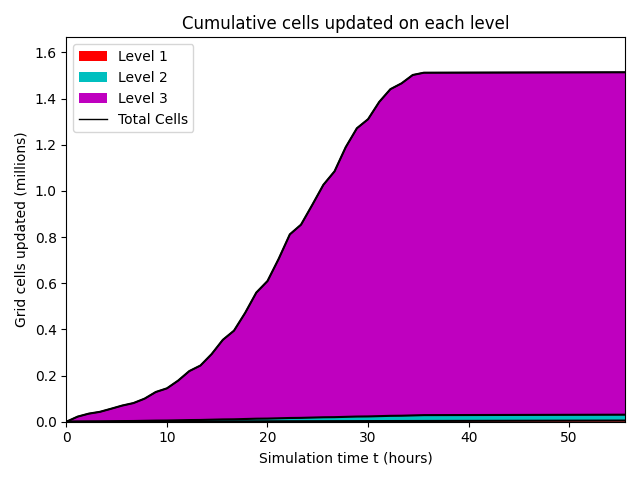
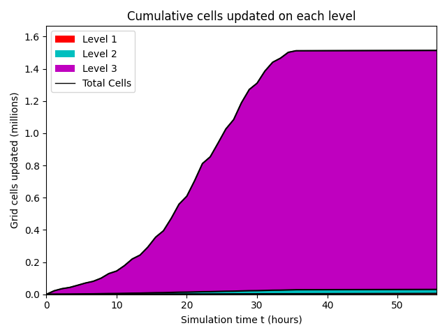
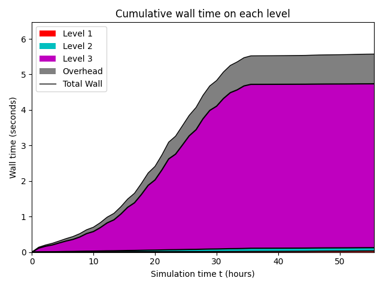
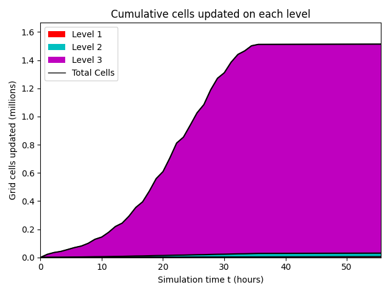
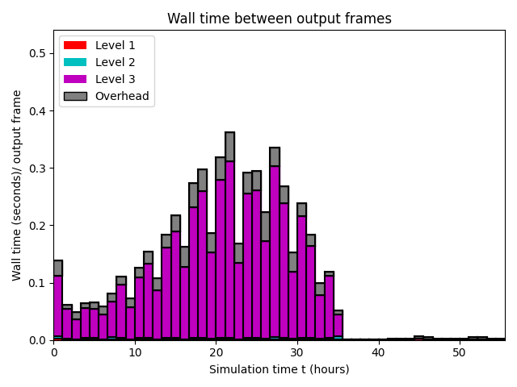
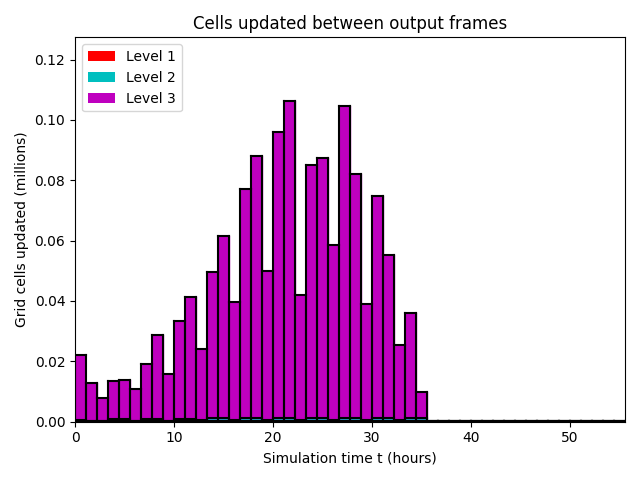
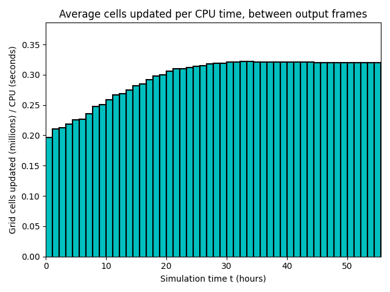

Datetime: 2024-06-09 19:08 From: /home/axel/Documents/EPFL/PDM/Trift/TriftGeoclaw/Tsunami/_output
============================== Timing Data ==============================
Integration Time (stepgrid + BC + overhead)
Level Wall Time (seconds) CPU Time (seconds) Total Cell Updates
1 0.033 0.033 0.510E+04
2 0.093 0.093 0.253E+05
3 4.610 4.605 0.148E+07
total 4.736 4.731 0.151E+07
All levels:
stepgrid 4.653 4.648
BC/ghost cells 0.077 0.077
Regridding 0.039 0.040
Output (valout) 0.758 0.757
Total time: 5.572 5.566
Using 1 thread(s)
Note: The CPU times are summed over all threads.
Total time includes more than the subroutines listed above
Note: timings are also recorded for each output step
in the file timing.csv.
clock_rate = 1000000000 per second, count_max = 9223372036854775807
clock_start = 30593765515262, clock_finish = 30599337972525
=========================================================================


 
